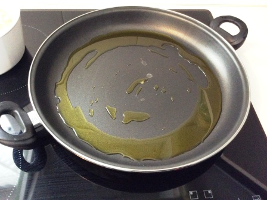
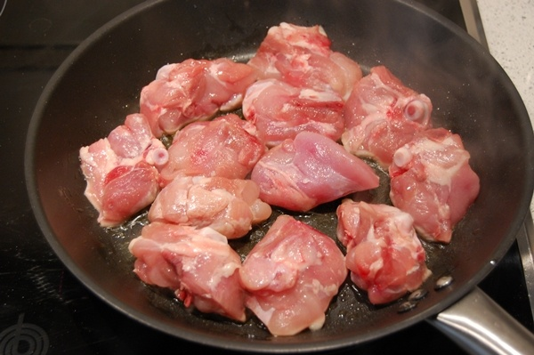
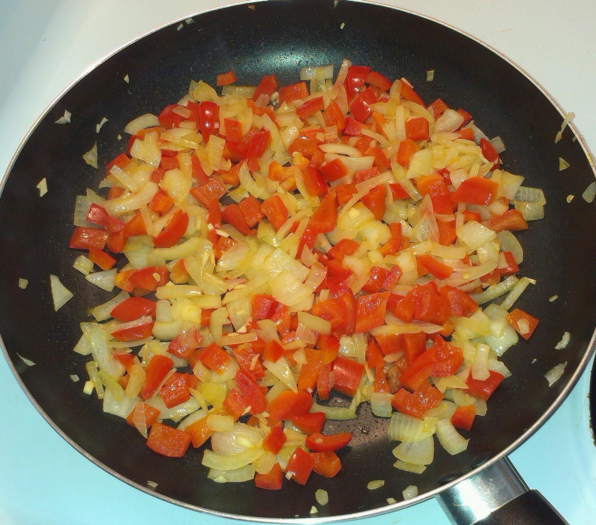
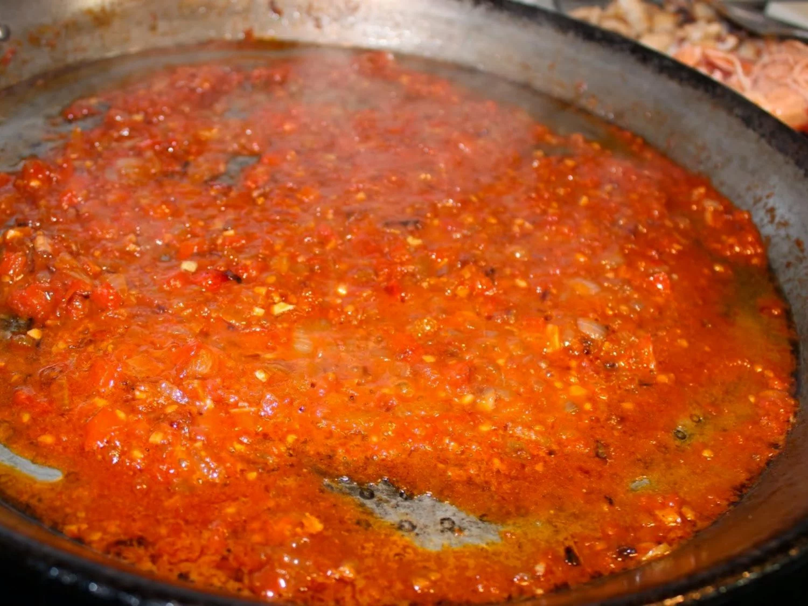
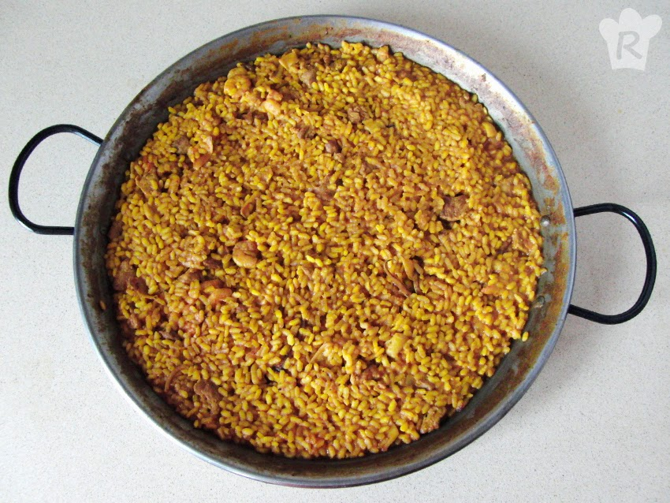
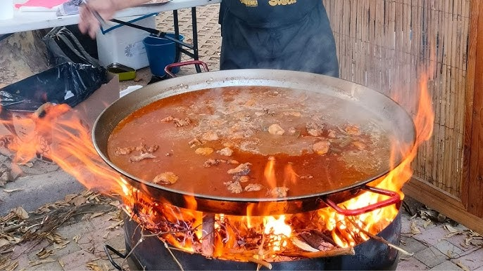
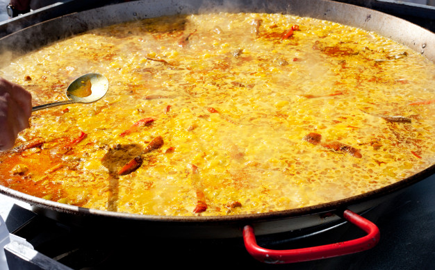
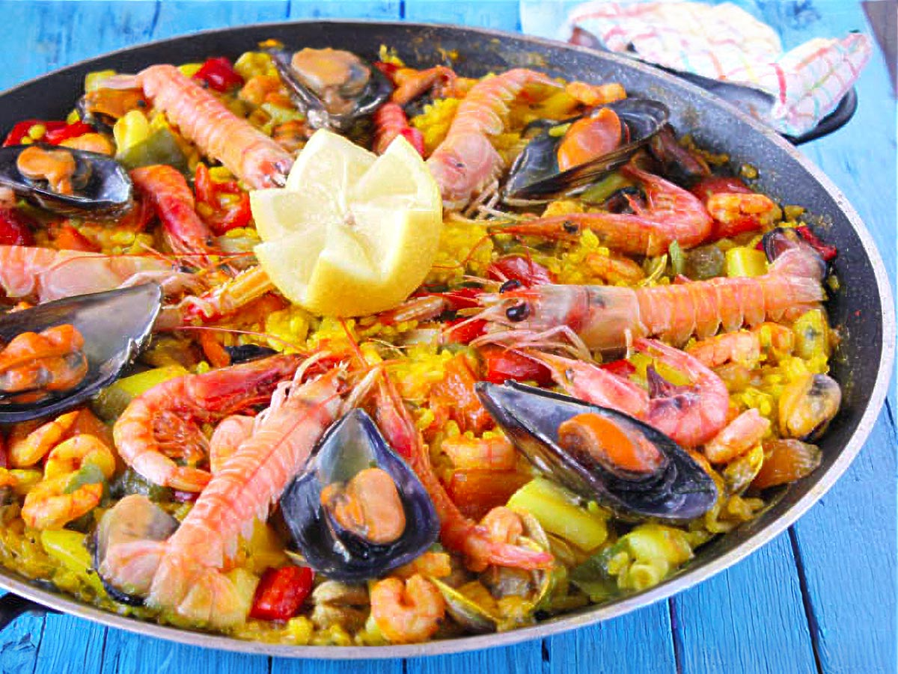
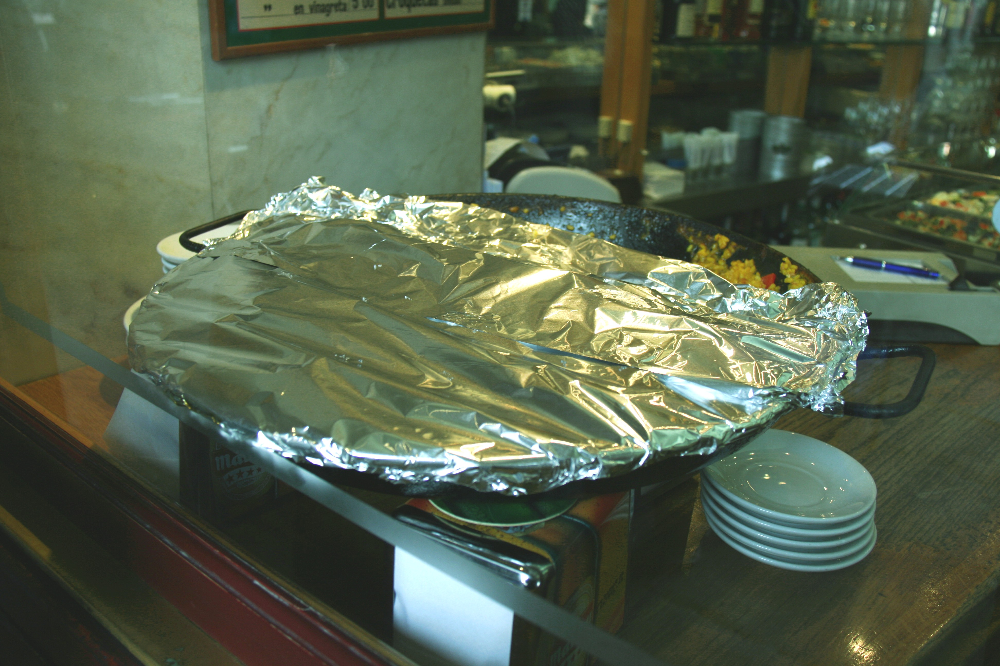

Volver al menu
Receta paella
Índice de contenidos
Ingredientes
- 400 g de arroz (preferiblemente de tipo bomba)
- 800 ml de caldo de pollo o de marisco
- 200 g de mariscos (gambas, mejillones, calamares)
- 1 pimiento rojo
- 1 tomate
- 2 dientes de ajo (picados)
- 100 g de guisantes
- Un chorro de ceite de oliva
- 1 Pimentón dulce
- Sal Al gusto
- 1 Limón
Paso a paso
- Coloca la paellera sobre el fuego y añade un buen chorro de aceite de oliva. Calienta a fuego medio.

- Dorar el Pollo

- Incorpora el ajo picado y el pimiento rojo. Sofríe durante unos minutos hasta que las verduras estén tiernas.

- Añade el tomate rallado y cocina hasta que se evapore el líquido, formando una base de sofrito

- Agrega el arroz y mezcla bien con el sofrito para que se impregne de los sabores. Cocina por un par de minutos.

- Vierte el caldo caliente (puedes añadir las hebras de azafrán en este momento) y lleva a ebullición. Ajusta la sal al gusto.

- Una vez que el caldo esté hirviendo, reduce el fuego a medio-bajo y cocina durante unos 15-20 minutos. No remuevas el arroz durante este tiempo para que se forme la costra en el fondo.

- A los 10 minutos de cocción, añade los mariscos y los guisantes. Continúa cocinando hasta que el arroz esté al dente y el líquido se haya absorbido.

- Retira la paellera del fuego y cubre con un paño limpio. Deja reposar durante 5-10 minutos antes de servir

Resultado final:

Volver al indice de contenidos